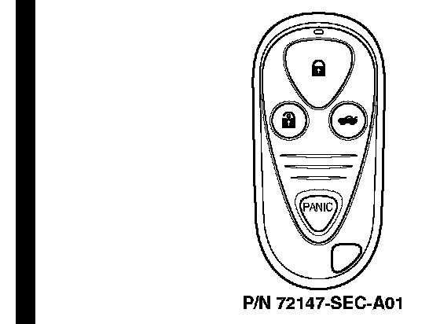

2004 TSX
*2004 TSX with factory-installed security system
Programming the Transmitter
NOTES:
^ This system accepts up to three transmitters.
^ Entering the programming mode cancels all learned transmitter codes, so none of the previously programmed transmitters will work. You must reprogram all of the transmitters once you are in the programming mode.
^ You must complete each step within 5 seconds of the previous step to keep the system from exiting the programming mode. Program the transmitters within 10 seconds.
1. Turn the ignition switch to ON (II).
2. Press the "LOCK" or "UNLOCK" button on one of the transmitters. (An unprogrammed transmitter can be used for this step.)
3. Turn the ignition switch to LOCK (0).
4. Repeat steps 1, 2, and 3 two more times. Use the same transmitter used in step 2.
5. Turn the ignition switch to ON (II).
6. Press the "LOCK" or "UNLOCK" button on the same transmitter. Make sure the power door locks cycle to confirm that the system is in programming mode.
7. Press the "LOCK" or "UNLOCK" button on each transmitter. (The system will accept up to four transmitters.) Make sure the power door locks cycle after you push each transmitter button to confirm that the system accepted the transmitter's code.
8. Turn the ignition switch to LOCK (0) to exit the programming mode.
Ordering a Transmitter
Transmitters can be ordered only by authorized Acura dealers. Order them from American Honda using normal parts ordering procedures.
Batteries for the Transmitter
The battery number is CR2025. Each transmitter uses one battery.*